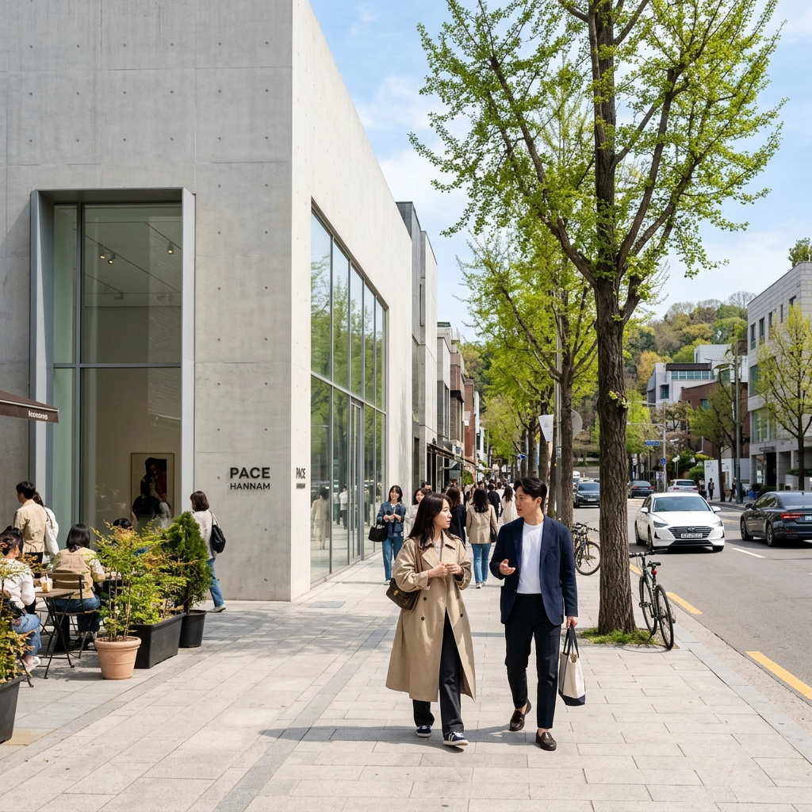
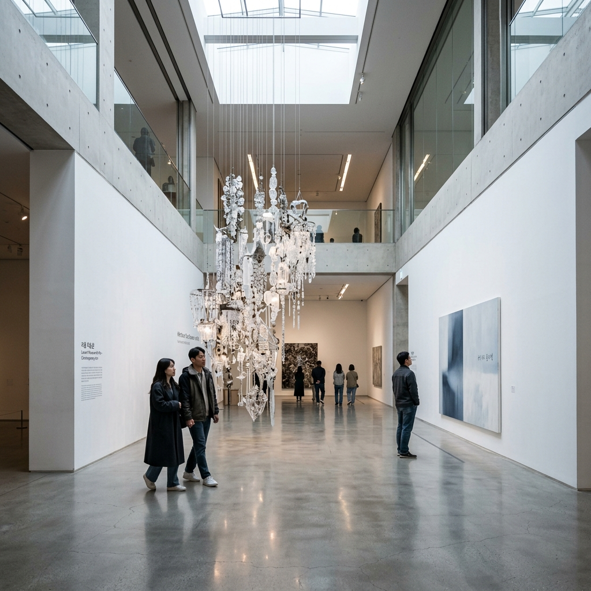
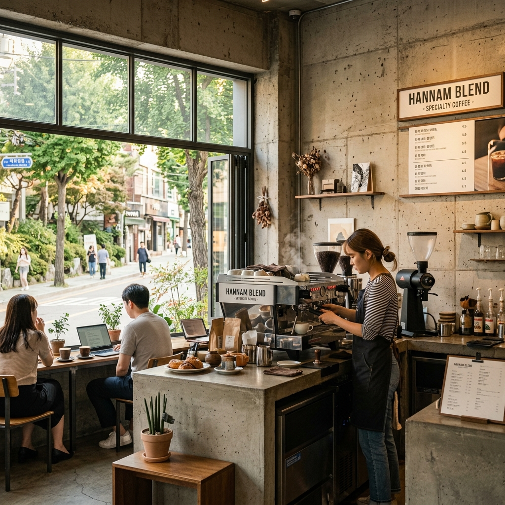

서울 용산구 한남동은 한국에서 가장 높은 지가(地價)를 자랑하는 주거 지역 가운데 하나이면서, 동시에 서울 문화·예술 씬의 핵심 허브 역할을 하는 독특한 동네입니다. 남쪽으로는 한강이 흐르고 북쪽으로는 남산의 능선이 이어지는 지형 덕분에 예로부터 고급 주거지로 자리매김해 왔습니다. 1960~70년대에는 외국 대사관과 외교관들이 밀집한 '외국인 타운'으로 형성됐고, 그 분위기가 지금까지 이어져 한남동 특유의 이국적이면서도 세련된 정체성을 만들어냈습니다.
2000년대 중반 이후 한남동의 변화는 가속화됩니다. 삼성그룹이 리움미술관을 개관하면서 세계적인 건축가 마리오 보타, 장 누벨, 렘 쿨하스가 설계한 건물이 이 동네에 들어서게 됐고, 이를 기점으로 국내외 갤러리와 아트 스페이스들이 한남동에 집결하기 시작했습니다. 갤러리들이 들어서자 자연스럽게 패션 브랜드와 리테일이 따라왔고, 지금의 꼼데가르송 길과 '한남 더 힐' 인근 고급 주거 단지가 완성됐습니다.
2026년 한남동은 단순한 힙한 동네를 넘어 서울 트렌드의 '원형'이 만들어지는 곳이 됐습니다. 성수동이 공장 개조 감성의 힙스터 공간이라면, 한남동은 처음부터 설계된 도시 미학과 자연스러운 성숙함을 동시에 가지고 있습니다. 좁은 언덕길 사이 예상치 못한 곳에서 발견하는 소규모 갤러리, 아무런 간판 없이 건물 2층에 자리한 스페셜티 카페, 주택을 통째로 개조한 브랜드 쇼룸 — 이 모든 것이 한남동을 서울에서 가장 '발견의 기쁨'이 큰 동네로 만들고 있습니다.
방문자 구성도 매우 다양합니다. 30대 이상의 문화 소비자, 미술 애호가, 해외 관광객, 패션·뷰티 업계 종사자들이 자연스럽게 섞여 있습니다. 낮 시간에는 갤러리와 카페 위주로, 저녁에는 파인다이닝과 와인바로 이어지는 하루 종일 즐길 수 있는 동네이기도 합니다. 주말에도 성수동이나 이태원 중심부에 비해 비교적 여유로운 분위기를 유지하기 때문에 여행자들에게 더욱 매력적으로 다가옵니다.
한남동을 제대로 즐기려면 무엇보다 '느리게' 걷는 것이 핵심입니다. 지도 앱이 안내하는 큰 길만 따라가다 보면 정작 이 동네의 진짜 매력인 골목골목의 작은 공간들을 놓치기 십상입니다. 이번 가이드에서는 한남동의 모든 층위를 탐색할 수 있는 완전한 경로를 안내해 드리겠습니다.
한남동은 서울 도심에서 접근하기 매우 편리한 위치에 있습니다. 지하철을 이용하면 6호선 한강진역과 이태원역이 주 진입점 역할을 합니다. 두 역 모두 한남동의 주요 명소들과 도보 10~15분 거리 이내에 있어 대중교통 여행자에게 최적화된 동네입니다.
한강진역(6호선)은 리움미술관과 한남동 카페·갤러리 밀집 지역으로 향하는 가장 가까운 역입니다. 1번 출구로 나와 큰길을 따라 이태원 방향으로 5분 정도 걸으면 꼼데가르송 길 입구가 나옵니다. 여기서부터가 한남동 탐방의 실질적인 시작점입니다. 2번 출구 방향으로는 유엔빌리지와 한남더힐 주거 단지 쪽으로 이어집니다.
이태원역(6호선)은 한남동 남쪽 끝인 이태원과의 경계 지점에서 내리는 역입니다. 3번 출구에서 이태원로를 따라 한강 방향으로 15분 정도 걷다 보면 타데우스로팍 서울, 아라리오갤러리 등 주요 갤러리들이 나타납니다. 이태원의 다양한 식당들과 연계하여 방문할 경우 이 역이 더 편리합니다.
버스를 이용하시는 경우 한남대교북단·한남동주민센터 정류장(421, 110A, 400번 등)을 이용하시면 됩니다. 강남에서 오시는 분들은 한남대교를 건너는 노선을 이용하면 한남동 중심부에 바로 내릴 수 있어 편리합니다.
자가용 방문 시에는 한남동 일대 주차가 생각보다 까다롭습니다. 리움미술관 주차장(유료, 관람객 할인 적용)이 가장 편리하며, 한남더힐 근처 사설 주차장들도 이용 가능합니다. 주말 낮 시간에는 한남대로 일대에 교통이 몰릴 수 있으므로 대중교통 이용을 강력히 권장드립니다. 특히 한강진역에서 도보로 출발하면 가로수길과 언덕길을 걸으며 한남동의 분위기를 충분히 만끽할 수 있어 더욱 만족스러운 방문이 됩니다.
| 교통 수단 | 경로 | 소요 시간 |
|---|---|---|
| 지하철 | 6호선 한강진역 1번 출구 | 리움미술관까지 도보 8분 |
| 지하철 | 6호선 이태원역 3번 출구 | 꼼데가르송 길까지 도보 10분 |
| 버스 | 한남동주민센터 정류장 | 각 명소 도보 5분 이내 |
| 자가용 | 리움미술관 주차장 (유료) | 주말 혼잡 주의 |
| 택시/앱 | 한남동 리움미술관 앞 하차 | 강남에서 15~20분 |
리움미술관은 한남동 여행의 절대적인 중심입니다. 삼성문화재단이 운영하는 이 미술관은 세계적인 건축가 세 명의 작품이 하나의 캠퍼스를 이루는 독특한 구성으로 유명합니다. 마리오 보타가 설계한 Museum 1(테라코타 색 원통형 건물)은 고미술 컬렉션을 담고 있으며, 장 누벨이 설계한 Museum 2(스테인리스 스틸과 유리 건물)는 현대미술 작품들의 공간입니다. 렘 쿨하스가 설계한 삼성아동교육문화센터 건물까지 더해져 미술관 전체가 하나의 건축 전시 그 자체라 할 수 있습니다.
2026년 현재 리움미술관의 상설 컬렉션은 고려청자부터 조선시대 회화, 20세기 한국 현대미술, 그리고 국제적 현대미술가들의 작품까지 방대한 범위를 아우르고 있습니다. 특히 정기적으로 기획되는 특별전시는 국내 미술관 가운데 가장 높은 퀄리티로 평가받고 있으며, 해외 유명 작가들의 국내 첫 개인전을 리움에서 만날 수 있는 경우도 많습니다. 방문 전 리움미술관 공식 홈페이지나 앱에서 현재 전시 일정을 반드시 확인하시기 바랍니다.
입장료는 성인 기준 일반 관람 1만 원 내외이며, 특별전시의 경우 별도 입장료가 부과됩니다. 삼성카드 소지자 및 각종 문화시설 이용권 소지자는 할인 혜택을 받을 수 있습니다. 미술관 입장은 현장 구매도 가능하지만 특별전시 기간에는 사전 예약이 사실상 필수입니다. 리움미술관 홈페이지 또는 네이버 예약을 통해 방문 일주일 전부터 예약하시는 것이 안전합니다.

관람 코스는 크게 두 가지로 나눌 수 있습니다. 시간이 충분한 경우 Museum 1과 Museum 2를 모두 돌아보는 풀 코스(약 2~3시간 소요)를 추천드립니다. 고미술 컬렉션에서 시작하여 현대미술 공간으로 이어지는 시간의 흐름을 느끼실 수 있습니다. 시간이 제한적이라면 Museum 2의 현대미술 컬렉션과 현재 기획전 중심으로 약 1시간 집중 관람하시는 것이 효율적입니다.
미술관 내 카페 리움라운지는 방문객들에게 인기 있는 공간입니다. 커피와 디저트를 즐기면서 미술관 정원과 건축을 감상할 수 있는 이 공간은 비관람객도 이용 가능하므로, 미술관 관람이 어렵더라도 카페만 방문하시는 분들도 계십니다. 미술관 야외 조각 정원에는 루이스 부르주아의 거대 거미 조각 '마망(Maman)'이 설치되어 있어 인증샷 필수 코스로 자리 잡고 있습니다.
한남동 탐방에서 절대 빠질 수 없는 곳이 바로 '꼼데가르송 길'입니다. 공식 명칭은 한남동 이태원로27가길이지만, 일본 패션 브랜드 꼼데가르송의 대형 단독 매장이 이 거리에 위치하면서 자연스럽게 그 이름으로 불리게 됐습니다. 주소보다 통칭이 훨씬 유명한 이 거리는 한남동의 가장 아이코닉한 산책 코스입니다.
꼼데가르송 길이 특별한 이유는 그 분위기의 독특함 때문입니다. 양편으로 플라타너스 가로수가 터널처럼 드리운 이 골목은 낮 시간 햇빛이 나뭇잎 사이로 스며드는 순간 서울에서 가장 아름다운 거리 중 하나가 됩니다. 거리 양쪽으로는 꼼데가르송 외에도 아크네 스튜디오, 메종마르지엘라, 아미, 오프화이트 등 세계적인 패션 브랜드의 한국 단독 또는 대형 매장들이 즐비합니다. 쇼핑을 즐기시는 분들에게는 천국 같은 구역이며, 단순히 걸으며 구경하는 것만으로도 충분히 즐거운 경험이 됩니다.
꼼데가르송 길에서 언덕을 조금 오르면 유엔빌리지 일대가 나타납니다. 이름 그대로 과거 유엔 직원들이 거주하던 외국인 주거 단지에서 유래한 이 지역은 현재 서울에서 가장 높은 주거비를 자랑하는 초고급 주거지입니다. 하지만 일반 방문객들도 이 지역의 언덕길을 따라 걸으며 한강과 북한산이 동시에 보이는 탁 트인 서울 도심 전망을 즐길 수 있습니다.
유엔빌리지 언덕에서 내려오면 보광동 쪽으로 이어지는 작은 골목들이 나타납니다. 이 골목들에는 현지인들만 아는 소규모 카페, 자연식 레스토랑, 빈티지 편집샵들이 숨어 있습니다. 지도 앱 없이 발걸음 가는 대로 걷다 보면 생각지도 못한 작은 공간들을 발견하는 재미가 있습니다. 특히 주택을 개조한 1~2인 운영 카페들은 메뉴는 소박하지만 공간 자체의 매력이 남다릅니다.
산책 코스 전체를 완주하려면 한강진역 1번 출구에서 출발하여 꼼데가르송 길 - 리움미술관 - 유엔빌리지 방향 언덕 - 보광동 골목 - 이태원로 복귀 순서로 약 90분~2시간이 소요됩니다. 편한 신발은 필수이며, 언덕 구간이 있으므로 컨디션에 맞춰 경로를 조절하시기 바랍니다.
한남동의 카페 씬은 성수동의 그것과 결이 다릅니다. 성수동이 '인증샷 경쟁'에 가깝다면, 한남동 카페들은 공간의 완성도와 커피의 퀄리티, 그리고 고요한 분위기를 우선시합니다. 간판을 찾기 힘든 카페, 예약이 없으면 들어가기 어려운 공간, 외부에서 내부가 보이지 않는 폐쇄적 구조의 카페들이 오히려 한남동다운 정체성을 만들어냅니다.

블루보틀 한남은 한남동 카페 씬의 상징입니다. 미국 스페셜티 커피 브랜드 블루보틀이 한국 첫 매장으로 한남동을 선택한 것은 우연이 아닙니다. 넓은 창고형 공간을 개조한 이 카페는 커피 추출 과정을 바에서 직접 볼 수 있는 오픈 키친 구조로, 커피를 음료가 아닌 '작업'으로 경험하게 합니다. 드립 커피 한 잔을 기다리는 시간도 이 공간에서는 즐거움이 됩니다. 오전 오픈 시간에 맞춰 방문하면 비교적 여유롭게 자리를 잡을 수 있습니다.
테라로사 한남은 강릉 발 스페셜티 커피 브랜드의 서울 플래그십 매장입니다. 2층 규모의 건물 전체를 사용하는 이 매장은 각 층마다 분위기가 달라 방문할 때마다 새로운 경험을 제공합니다. 원두 구매도 가능하며 싱글 오리진 커피의 풍미 비교 시음을 즐기고자 하는 커피 애호가들에게 특히 추천드립니다.
어 웨이브 커피로스터스(A Wave Coffee Roasters)는 한남동에서 가장 조용하고 세심한 카페 중 하나입니다. 자체 로스팅한 원두로 만드는 에스프레소 기반 음료들이 주를 이루며, 간결하지만 완성도 높은 디저트와 함께 즐기기 좋습니다. 건물 외관이 매우 소박하여 처음 방문하시는 분들은 지나치기 쉽습니다. 좁은 골목 안쪽에 위치한 위치를 미리 지도에서 확인하고 방문하시기 바랍니다.
커피 리브레 한남점은 한국 스페셜티 커피의 선구자적 브랜드입니다. 아프리카와 중남미 각지에서 직접 소싱한 고품질 생두를 자체 로스팅하며, 에스프레소와 필터 커피 모두 수준 높은 퀄리티를 자랑합니다. 커피에 대한 깊이 있는 이야기를 들을 수 있는 바리스타들의 전문성도 이 카페의 자산입니다. 원두 구매 후 직접 홈 브루잉에 도전해 보시는 것도 좋습니다.
하이드아웃(Hideout)은 이름 그대로 숨어있는 공간입니다. 한남동 언덕길 위 건물 2층에 자리한 이 카페는 창밖으로 내려다보이는 한남동 골목 전경이 일품입니다. 인스타그램에 위치를 공유하지 않는 것으로 유명하며, 아는 사람만 찾아오는 구조를 의도적으로 유지하고 있습니다. 소수의 좌석만 운영하여 조용한 독서나 대화에 최적화된 환경입니다.
이 밖에도 펠트 커피, 모노클 카페, 카페 드 파리, 더 콘래드 티라운지, 봄봄 한남 등이 한남동 카페 애호가들 사이에서 꾸준히 언급되는 곳들입니다. 방문 전 각 카페의 운영 시간과 휴무일을 인스타그램이나 카카오맵에서 확인하시는 것을 권장드립니다. 소규모 개인 운영 카페의 경우 예고 없이 임시 휴업하는 경우도 있습니다.
한남동은 서울에서 갤러리 밀도가 가장 높은 지역 중 하나입니다. 리움미술관이라는 거대한 기관 미술관을 중심으로, 세계적인 상업 갤러리들이 이 동네에 자리를 잡았습니다. 단순히 작품을 파는 곳이 아니라 전 세계 미술 시장의 흐름을 읽을 수 있는 공간들이기에, 미술에 깊은 관심이 없는 분들에게도 충분히 흥미로운 방문지가 됩니다. 대부분의 갤러리는 무료 입장이 가능하며, 오픈 전시 시간에는 누구나 자유롭게 관람할 수 있습니다.
타데우스로팍 서울(Thaddaeus Ropac Seoul)은 오스트리아 출신의 세계적인 갤러리스트 타데우스 로팍이 운영하는 갤러리의 서울 지점입니다. 파리, 런던, 잘츠부르크에 이은 아시아 첫 지점이 바로 한남동에 개설됐다는 사실 자체가 한남동의 위상을 말해줍니다. 안젤름 키퍼, 게오르그 바젤리츠 등 세계적인 작가들의 한국 전시를 이곳에서 만날 수 있으며, 전시 일정은 홈페이지에서 사전 확인 후 방문하시기 바랍니다.
아라리오갤러리 서울(Arario Gallery Seoul)은 한국을 대표하는 민간 현대미술 갤러리입니다. 아시아 작가들을 중심으로 국제적인 컨텍스트의 전시를 꾸준히 선보이고 있으며, 갤러리 공간 자체의 건축적 완성도도 높습니다. 한남동점은 서울의 여러 지점 중 가장 큰 규모로, 다채로운 설치 작품들을 수용할 수 있는 높은 천장고가 특징입니다.
PKM갤러리는 국제 미술 시장에서 한국을 대표하는 주요 갤러리 중 하나입니다. 아트바젤, 프리즈 등 세계적인 아트페어에 꾸준히 참가하며 국내 작가들의 해외 진출을 적극적으로 지원하고 있습니다. 한남동의 차분한 거리 안쪽에 위치한 이 갤러리는 외관이 매우 단아하여 지나치기 쉬우니 주소를 미리 확인하고 방문하시기 바랍니다.
이 밖에도 학고재 한남, 원앤제이 갤러리, 갤러리 현대 한남, 페이스 서울 등 크고 작은 갤러리들이 한남동 일대에 산재해 있습니다. 갤러리 오픈 시간은 보통 화~토요일 오전 10시~오후 6시이며, 일·월요일은 대부분 휴관합니다. 여러 갤러리를 하루에 돌아보는 '갤러리 호핑'이 가능하며, 이 경우 도보 이동이 충분히 가능한 거리에 모여 있어 편리합니다.
한남동은 2020년대 들어 서울 팝업스토어의 '성지'로 부상했습니다. 글로벌 럭셔리 브랜드부터 신생 K-브랜드까지, 새로운 컬렉션이나 콜라보레이션을 선보일 때 가장 먼저 한남동에 팝업 공간을 마련합니다. 이 현상의 배경에는 한남동 방문객 특성이 있습니다. 소득 수준이 높고 트렌드에 민감하며 새로운 경험에 지갑을 여는 의향이 강한 소비자들이 이 동네에 집중되어 있기 때문입니다.
2026년 현재 한남동 팝업스토어의 트렌드를 분석해 보면 몇 가지 공통점이 보입니다. 첫째, 단순한 제품 판매를 넘어 '체험'을 핵심 가치로 내세우는 팝업이 주류입니다. 향수 체험, 커스터마이징 서비스, 아티스트와의 콜라보 워크숍 등 방문 자체가 콘텐츠가 되는 형식입니다. 둘째, 기간이 매우 짧아졌습니다. 과거 2~4주 운영이 일반적이었다면 지금은 3~7일의 초단기 팝업이 늘고 있습니다. 희소성이 방문 동기를 만들기 때문입니다.
셋째, 공간 자체의 건축적 완성도에 대한 투자가 커졌습니다. 한남동 방문자들은 눈이 높아서 '그냥 브랜드 물건만 쌓아놓은' 공간에는 반응하지 않습니다. 인테리어 디자이너가 특별히 설계한 공간, 브랜드 고유의 세계관을 공간에 완벽하게 구현한 팝업만이 입소문을 탑니다. 이 때문에 일부 브랜드들은 팝업 공간 설계에 수억 원을 투자하기도 합니다.
한남동 팝업스토어 정보를 실시간으로 파악하려면 인스타그램 해시태그 #한남동팝업 #한남팝업 검색이 가장 효과적입니다. '서울팝업' 전문 인스타그램 계정들도 다수 존재하며, 이 계정들을 팔로우하면 새로운 팝업 정보를 빠르게 접할 수 있습니다. 또한 각 브랜드의 공식 인스타그램을 팔로우하고 있으면 팝업 오픈 전 사전 예약 링크를 받을 수 있어 유리합니다.
팝업스토어를 방문할 때는 오픈 초반 1~3일을 노리는 것이 좋습니다. 한정판 굿즈나 체험 슬롯은 오픈 초반에 빠르게 소진되는 경우가 많습니다. 주말에는 대기 시간이 1~2시간에 달하는 팝업도 있으므로 평일 오전 방문이 가장 효율적입니다. 사전 예약이 필요한 팝업은 반드시 예약 후 방문하시기 바랍니다.
한남동의 식사 씬은 서울에서도 손꼽히는 수준입니다. 이태원이라는 다국적 문화의 영향권 안에 있으면서도 독자적인 파인다이닝 생태계를 형성하고 있으며, 대형 체인보다 개인 오너 셰프가 운영하는 작은 레스토랑들이 이 동네의 식문화를 이끌고 있습니다. 카페와 마찬가지로 간판보다 입소문으로 운영되는 레스토랑들이 많다는 것도 특징입니다.
브런치를 즐기신다면 한남동 로컬 브런치 카페들을 추천드립니다. 오전 10시~오후 2시 사이에 에그 베네딕트, 아보카도 토스트, 팬케이크 등 트렌디한 브런치 메뉴를 내놓는 카페들이 꼼데가르송 길 주변과 보광동 골목에 여럿 있습니다. 주말 브런치 타임에는 웨이팅이 생기는 곳도 있으므로 오픈 시간에 맞춰 방문하거나 사전 예약을 권장드립니다.
점심 식사로는 한남동의 아시안 퓨전 레스토랑들이 탁월한 선택입니다. 일식, 태국식, 베트남식을 기본으로 하되 한국적 식재료와 기법을 더한 퓨전 요리들이 이 동네의 특기입니다. 1인 식사보다 2~4인이 여러 메뉴를 나눠 먹는 타파스 스타일로 구성된 레스토랑들이 많습니다. 점심 세트 메뉴를 운영하는 곳들은 저녁 단품 대비 합리적인 가격에 같은 퀄리티의 요리를 즐길 수 있어 더욱 인기입니다.
저녁 파인다이닝을 원하신다면 한남동은 서울에서 가장 좋은 선택지 중 하나입니다. 미쉐린 가이드에 등재된 레스토랑들을 포함하여 오너 셰프가 직접 운영하는 코스 요리 레스토랑들이 한남동에 집중되어 있습니다. 대부분 사전 예약이 필수이며, 인기 레스토랑의 경우 1~2개월 전부터 예약이 마감되기도 합니다. 네이버 예약, 캐치테이블 등 예약 플랫폼을 적극 활용하시기 바랍니다.
예산별로 간단히 정리해 드리면, 브런치·점심 1인 기준 1만 5천~3만 원, 캐주얼 다이닝 저녁 2만~5만 원, 코스 파인다이닝 저녁 1인 8만~20만 원 이상으로 폭넓게 분포합니다. 한남동 특성상 서울 평균보다 가격대가 다소 높은 편이므로 예산에 맞는 선택을 미리 하시는 것이 좋습니다. 그러나 가격 대비 경험의 만족도는 서울 최고 수준이라는 평가를 받는 레스토랑들이 많습니다.
| 식사 타입 | 추천 장소 | 가격대 (1인) | 특징 |
|---|---|---|---|
| 브런치 | 꼼데가르송 길 주변 브런치 카페 | 1.5~3만 원 | 에그 베네딕트·팬케이크 |
| 점심 세트 | 한남동 아시안 퓨전 레스토랑 | 2~4만 원 | 런치 세트 합리적 가격 |
| 캐주얼 저녁 | 보광동·이태원로 경계 레스토랑 | 3~6만 원 | 와인 페어링 가능 |
| 파인다이닝 | 한남동 오너 셰프 레스토랑 | 8만 원 이상 | 사전 예약 필수 |
| 와인바 | 한남동 소규모 와인바 | 잔당 1.5~4만 원 | 내추럴 와인 특화 |
한남동을 하루에 제대로 즐기려면 동선 계획이 중요합니다. 이 동네는 볼 것, 먹을 것, 즐길 것이 워낙 많아서 계획 없이 돌아다니다 보면 정작 중요한 곳들을 놓치는 경우가 생깁니다. 아래의 타임라인은 주말 하루 최적 동선을 기준으로 작성하였으나, 개인의 관심사에 따라 유연하게 조정하시기 바랍니다.
이 동선을 완주하면 한남동의 핵심 요소들을 모두 경험할 수 있습니다. 걷는 거리가 상당하므로(총 5~8km 예상) 편안한 신발은 필수이며, 언덕 구간이 포함되어 있어 체력 소모도 적지 않습니다. 카페에서의 휴식 시간을 충분히 포함시키고, 개인 페이스에 맞게 조율하시기 바랍니다.
한남동 탐방을 마치고 나서, 또는 한남동과 함께 연계하여 방문하기 좋은 인근 명소들이 여럿 있습니다. 한남동의 위치적 이점은 서울의 여러 핵심 관광지와 도보 또는 짧은 이동 거리 안에 있다는 점입니다. 한남동을 기점으로 하루 여행을 설계하면 매우 알찬 서울 탐방이 가능합니다.
이태원은 한남동과 경계를 맞대고 있는 가장 가까운 연계 명소입니다. 한남동의 차분하고 세련된 분위기와는 달리 이태원은 더욱 활기차고 다국적인 에너지가 넘칩니다. 경리단길, 해방촌, 이슬람 사원 주변 할랄 음식 거리 등 각각의 개성 강한 골목들이 이태원 안에 공존하고 있습니다. 한남동에서 이태원역 방향으로 걸어가면서 두 동네의 분위기가 어떻게 달라지는지 체감해 보시는 것도 흥미로운 경험입니다.
한강공원 이촌지구 및 반포지구는 한남동에서 택시나 버스로 10분 내외 거리입니다. 특히 반포 한강공원의 달빛무지개분수는 야간에 한강을 배경으로 펼쳐지는 화려한 분수쇼로 유명합니다. 한남동에서 저녁 식사를 마친 후 한강공원으로 이동하여 야경을 즐기는 코스는 서울 여행자들 사이에서 인기 있는 루트입니다. 한강 자전거 도로를 이용한 라이딩도 한남동 근처 한강변에서 시작하기 용이합니다.
남산은 한남동의 북쪽 바로 위에 자리한 서울의 상징적인 산입니다. 남산 케이블카, N서울타워, 남산 둘레길 등 다양한 즐길 거리가 있으며, 한남동에서 이태원을 지나 남산 방향으로 걸어 올라가는 루트는 서울의 다채로운 지형과 동네 풍경을 한꺼번에 경험할 수 있는 특별한 코스입니다. 남산 정상 N서울타워에서 바라보는 서울 도심 전망은 한남동 탐방의 완벽한 마무리가 됩니다.
경복궁·북촌 방면도 한남동에서의 접근이 어렵지 않습니다. 지하철 6호선으로 이태원역에서 갈아타거나 택시를 이용하면 경복궁역까지 20~30분이면 도달할 수 있습니다. 한남동의 현대적이고 국제적인 분위기와 경복궁·북촌의 전통적인 풍경을 같은 날 경험하는 것은 서울의 다층적인 매력을 압축적으로 느낄 수 있는 방법입니다.
한남동과 인근 명소들을 연계하는 여행 계획을 세우실 때는 이동 시간보다 각 장소에서의 체류 시간을 넉넉히 잡으시는 것이 중요합니다. 서울의 교통 체증은 예측하기 어려우므로 타이트한 일정보다 여유 있는 계획이 훨씬 만족스러운 여행을 만들어 드릴 것입니다.
#한남동카페 #한남동갤러리 #리움미술관 #꼼데가르송길 #한강진역 #서울카페투어 #한남동맛집 #서울갤러리 #한남동여행 #서울국내여행 #2026서울 #타데우스로팍